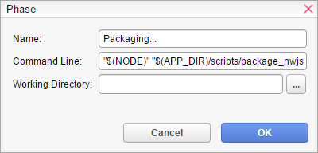

There you can see all build configurations. With a double-click you can edit the selected build configuration.名称
- The name of the build configuration. That name is shown in menus and progress windows.构建阶段
- The list of build phases executed one after another.

Each build configuration contains a list of phases which are executed one after another. If the list is empty, the build step is skipped.名称
- The name of the phase. That name is shown in the details section of the progress window.命令行
- The command line to execute as a child process of VN Maker. The next phase is triggered after the child process has been terminated. The standard output stream of the child process is redirected to the progress window console.工作目录
- The working directory (CWD) for the command line. If empty, the output directory is used.
Each phase executes a command line to process the exported game data in a specific way. A set of variables, starting with a $ sign like "$(NODE)", is available for use in the Command Line as well as in the Working Directory field. See below for all available variables and their values.
变量
The following variables are available for use in Command Line and Working Directory field of a build configuration phase. A variable needs to be in the following format:
$(VARIABLE_NAME)
The following variables are available:NODE
- Path to VN Maker's internal Node.js executable.APP_DIR
- Path to VN Maker's installation directory.PROJECT_DIR
- Path to the current project folder.OUTPUT_DIR
- Path to the output folder.PROJECT_NAME
- Name of the current project.GAME_TITLE
- The project's game title.PACKAGE_ID
- The project' package id which can be set in project preferences.PACKAGE_INFO
- Package Info data as base64 encoded JSON string. If parsed, it contains the following values.PARAMS